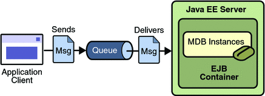

Like web services, EJBs allow for remote execution of business logic. The EJBs run inside the EJB container of the application server, which is separate from the web container. This is important because EJBs keep the business logic separate from the presentation in the client (whether the client is web based or not). This allows for multiple clients to be developed using the same EJBs.
EJBs can also be web services at the same time as being EJBs. The client applications will have two ways of accessing the business logic. In addition to using HTTP to transfer the business logic EJBs can use what is called an RMI (Remote Method Invocation) connection.
There are two types of EJBs
In addition to there being two types of EJBs, there are two ways to access EJBs. The EJBs could be accessed remotely or locally. These two types are programmed via interfaces. It depends on how the clients will be accessing the EJBs as to whether to implement local interfaces or remote interfaces.
If the client is a web interface or another EJB that is running on the same application server then it is wise to implement the local interfaces for the EJBs. If the clients are not on the same server then the EJBs must implement the local interfaces. EJBs can be implemented using both local and remote interfaces if multiple clients will be accessing them.
Session Beans are invoked when clients need to utilize remote or local business logic. There are two types of session beans, stateless and stateful.
Stateless Session Beans
Stateless Session Beans are session beans that do not have any information about the client. These beans are pooled together on the server so there is no guarantee that you will get the same bean between requests. All method invocation is done through pass-by-reference.
Example--Calculator
The Remote and Local interfaces
@Local
public interface CalculatorLocal {
public int sum(int add1, int add2);
public int multiply(int mul1, int mul2);
}
@Remote
public interface CalculatorRemote {
public int sum(int add1, int add2);
public int multiply(int mul1, int mul2);
}
The implementation of the interfaces.
@Stateless
public class CalculatorImpl implements CalculatorRemote, CalculatorLocal {
public int sum(int add1, int add2) {
return add1+add2;
}
public int multiply(int mul1, int mul2) {
return mul1*mul2;
}
}
It is important to note the annotations that are used in the creation of the stateful session bean.
Stateful Session Beans
Stateful Session Beans are session beans that contain client information. This information is considered to be "conversational talk" since the clients talk with the application server to retrieve the EJBs. All method invocations is done through pass-by-value.
Example--Counter
The local interface for the counter stateful session bean.
@Local
public interface CounterLocal {
public int increment();
public int reset();
}
The Remote interface for the stateful session bean.
@Remote
public interface CounterRemote {
public int increment();
public int reset();
}
The actual stateful session bean that implements the business logic CounterImpl, which implements both the local and remote interfaces.
@Stateful
public class CounterImpl implements CounterLocal, CounterRemote {
private int count = 0;
public int increment() {
return ++count;
}
public int reset() {
return (count = 0);
}
}
It is important to note the annotations that are used in the creation of the stateful session bean.
Message-Driven Beans are different because the client does not use interfaces to invoke the beans. Instead the Java Message Service API is used to send messages to the application server. The Message-Driven Beans just process the messages.
The Message-Driven Bean will listen for messages that come through the application server. It is outlined in the following diagram.

The messages are automatically added to the queue and the MDB automatically takes the messages off of the queue.
Example--Simple Message Bean
The MDB will be implemented a little bit differently than the session beans because of the fact that MDB are not invoked via interfaces. They are invoked via JNDI calls. The beginning of the bean is outlined like this.
@MessageDriven(mappedName="jms/Queue")
public class SimpleMessageBean implements MessageListener {
@Resource
private MessageDrivenContext mdc;
...
The heart of the MDB is the handler that is called when the messages are taken off of the queue, which is always named onMessage.
public void onMessage(Message inMessage) {
TextMessage msg = null;
try {
if (inMessage instanceof TextMessage) {
msg = (TextMessage) inMessage;
logger.info("MESSAGE BEAN: Message received: " +
msg.getText());
} else {
logger.warning("Message of wrong type: " +
inMessage.getClass().getName());
}
} catch (JMSException e) {
e.printStackTrace();
mdc.setRollbackOnly();
} catch (Throwable te) {
te.printStackTrace();
}
}
Notice the annotations that were used for the MDB.
Sources:
Apache Software Foundation. Simple Stateful Example. 19 April 2009 <http://openejb.apache.org/3.0/simple-stateful-example.html>.
—. Simple Stateless Example. 19 April 2009 <http://openejb.apache.org/3.0/simple-stateless-example.html>.
Sun Microsystems. Java EE 5 Tutorial. October 2008. 7 April 2009 <http://java.sun.com/javaee/5/docs/tutorial/doc/bnaph.html>.